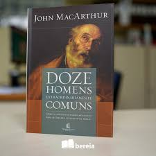

Doze Homens Extraordinariamente Comuns
Neste livro, John MacArthur explora a graça de Deus em chamar doze homens extraordinariamente comuns e usá-los como arautos do Evangelho, expondo a história de cada um dos doze.
 Compre aqui!Vem, Senhor, Jesus!
Neste livro, John Piper faz um estudo teológico a respeito da segunda vinda de Jesus com o intuito de despertar no leitor amor por esse evento escatológico que gera dúvidas no coração dos crentes.
 Compre aqui!
Compre aqui!
Sansão e o Amor Invecível: A Vitória de Deus por meio de Heróis Quebrados
Neste livro, Emílio Garófalo Neto realiza um estudo bíblico, teológico e devocional a respeito da vida de Sansão e de como Deus triunfa sobre o mal e sobre nós.
Compre aqui!Homens de Verdade: O Chamado de Deus para a Masculinidade
Neste livro, Richard Phillips estabelece os fundamentos bíblicos de masculinidade em uma sociedade com valores corrompidos pelo mundanismo e incentiva os homens a cultivarem e guardarem o jardim que Deus pôs em suas mãos.
Compre aqui!